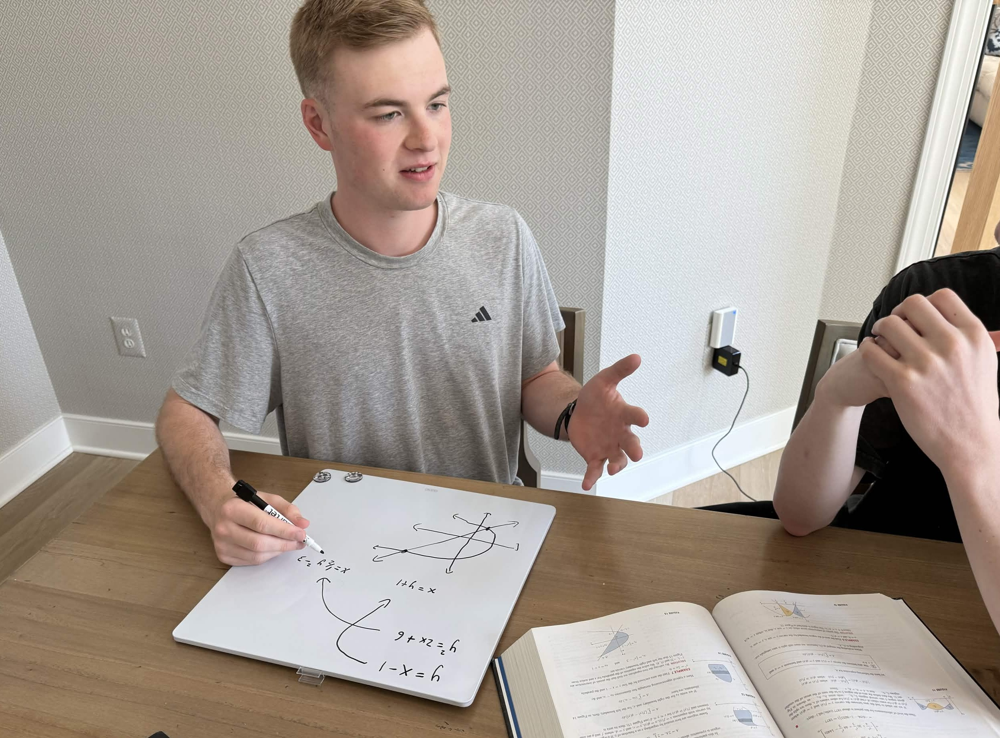
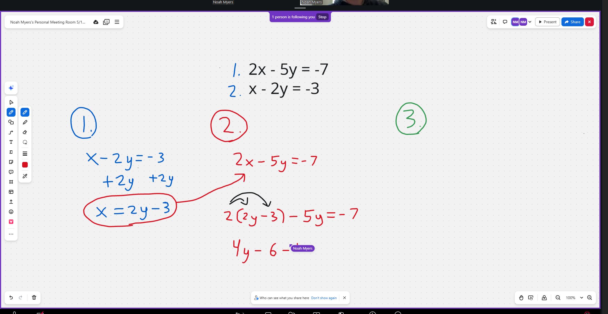

Private Math Tutoring for Middle and High School Students
Helping students improve their grades, build confidence, and understand math intuitively.
Contact MeSubjects Offered
- Pre-Algebra
- Algebra I and II
- Geometry
- Precalculus
- Calculus I and II
Welcome
I am Noah Myers, a current junior math major at Liberty University. I am eager to help middle and high school students gain a better understanding of math and improve their skills as well as their grades.
For many students, math is one of their most difficult subjects in school, if not the most difficult. By working with students one-on-one, I help to strengthen their math skills and confidence. I understand that math can feel frustrating when topics move too quickly or explanations are unclear. My goal is to break problems down step by step and help students actually understand why each method works.
My Teaching Approach
When teaching students, I adapt to meet their needs rather than following any set course. Everyone has a unique thought process and approach to learning!
If a certain method isn’t working for a given topic, I change course and try a new one. As I get to know students better through repeated sessions, I gain an idea of how they think through problems and can create unique approaches specifically for them.
My Teaching Method
I offer sessions both in person and virtually. Due to modern technology, online learning can easily be as effective as face-to-face. However, I still encourage choosing in-person sessions if possible.
In-person
Pencil/paper or whiteboard/marker approach.
For some students, this helps their focus and allows them to engage more.
Typically I go to the students residence or another public meeting place. This is offered anywhere in the Loudoun county area.

Virtual
Meetings are done through Zoom. This allows the student and I to still see each other.
Zoom’s interactive whiteboard feature gives us the ability to both write together on the same digital document in real time.

Each session is $40 and I accept most forms of digital and physical payment.